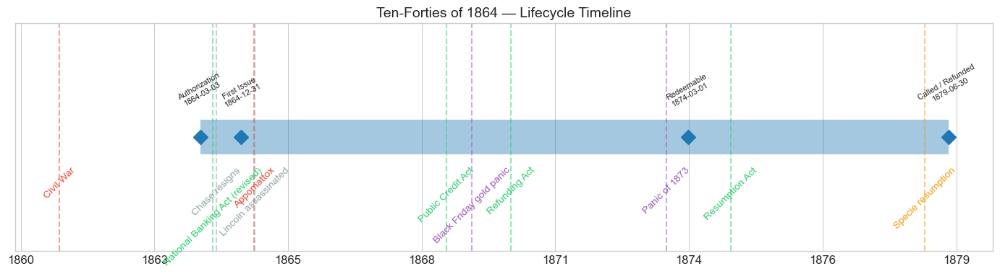
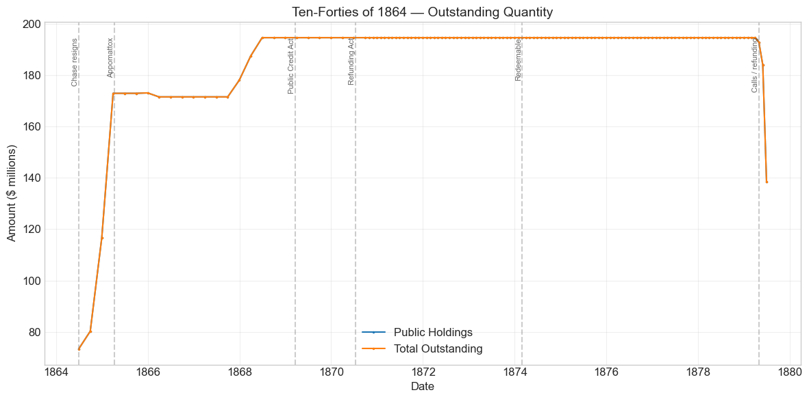
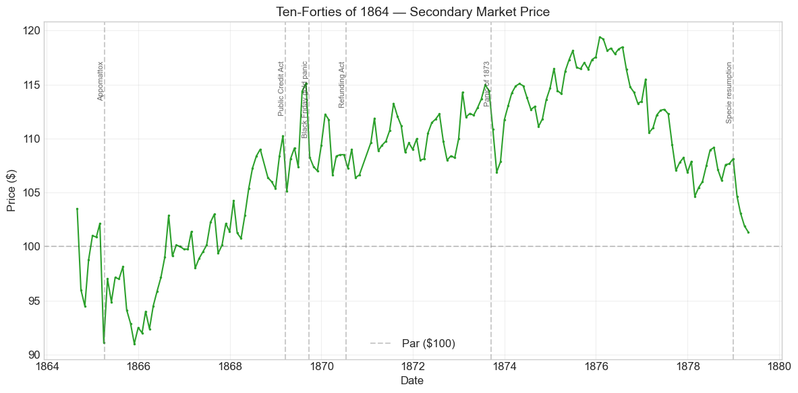
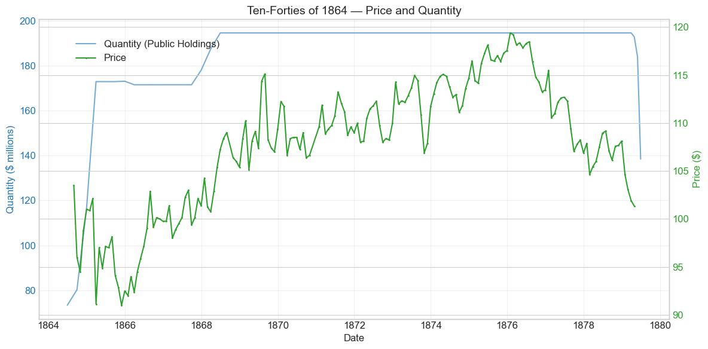
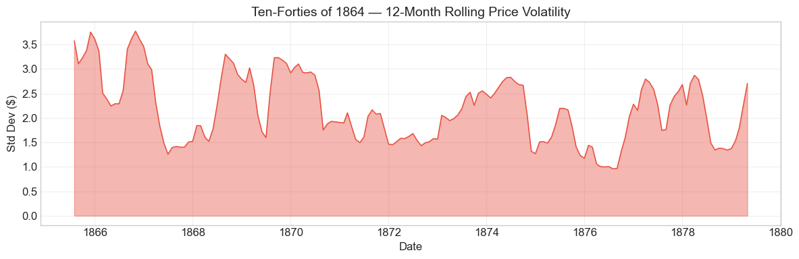

Bond Biography: Ten-Forties of 1864#
Chase’s Five Per Cent Experiment: The Loan the Market Refused to Love#
Enhanced from the Hall-Payne-Sargent US Federal Bond Database (2,857 issues, 1776–1960)
Bond ID (L1): 20108 Category: Interest Bearing > Marketable > Long Term Bond Coupon: 5% semi-annual, principal and interest payable in coin Term: Redeemable after 10 years (March 1, 1874), payable in 40 (March 1, 1904) — hence “ten-forties” Authorization: $200,000,000 under the Act of March 3, 1864
import pandas as pd
import numpy as np
import matplotlib.pyplot as plt
import matplotlib.patches as mpatches
import datetime
import warnings
warnings.filterwarnings('ignore')
plt.style.use('seaborn-v0_8-whitegrid')
plt.rcParams.update({'figure.figsize': (12, 6), 'font.size': 12,
'axes.titlesize': 14, 'axes.labelsize': 12})
# Load the bond database
store = pd.HDFStore('../data/BondDF.h5', mode='r')
BondList = store['BondList']
BondQuant = store['BondQuant']
BondPrice = store['BondPrice']
store.close()
BondQuant_T = BondQuant.transpose()
BondPrice_T = BondPrice.transpose()
bond_id = 20108
print(f'Loaded data for: Ten-Forties of 1864 (ID: 20108)')
/Users/thomassargent/anaconda3/lib/python3.9/site-packages/pandas/core/arrays/masked.py:60: UserWarning: Pandas requires version '1.3.6' or newer of 'bottleneck' (version '1.3.5' currently installed).
from pandas.core import (
Loaded data for: Ten-Forties of 1864 (ID: 20108)
Overview#
The Ten-Forties of 1864 were authorized by the Act of March 3, 1864, which empowered the Treasury to borrow up to \(200 million on bonds redeemable at the government's pleasure after ten years and payable in forty --- the structure that gave the loan its Wall Street name. Treasury Secretary **Salmon P. Chase**, exercising the discretion the act gave him, fixed the coupon at **5 percent**, semi-annual, with both principal and interest expressly payable in coin. During its lifetime on the secondary market the bond's average price was \)107.68, ranging from \(91.00 to \)119.39 (174 monthly observations from August 1864 to April 1879). Outstanding quantity peaked at $194.57 million on September 30, 1868.
What makes this bond’s story distinctive in the arc of Civil War finance is that it was a deliberate — and largely unsuccessful — experiment in cheaper borrowing. By early 1864 the \(500 million Five-Twenty loan of 1862 (see the companion chapter on Bond 20101) had been fully subscribed, thanks to Jay Cooke's unprecedented mass-marketing campaign. Chase drew an optimistic conclusion: if the public would absorb half a billion dollars of 6 percent coin bonds, perhaps the government's credit had improved enough to command money at 5. The ten-forties were the test of that proposition, and the market's answer was a polite but unmistakable *no*. Sales crawled: the database shows only about **\)73 million** outstanding by the end of June 1864 — the month Chase resigned — against a $200 million authorization, at the very moment the war was consuming millions of greenback dollars a day. Congress and Chase’s successor, William Pitt Fessenden, promptly returned to 6 percent instruments and to the three-year 7.30 percent notes, conceding that the market, not the Secretary, set the terms on which a nation at war could borrow.
Yet the loan that disappointed as a war measure had a consequential afterlife. Its explicit pledge of coin payment of principal — a promise the Five-Twenties conspicuously lacked — anticipated the Public Credit Act of 1869 and made the ten-forties a clean test case of the “honest money” program. And because they carried a 5 percent coupon rather than 6, they were among the last of the great war loans to be refunded in the 1870s: only after John Sherman had replaced the wartime sixes with new 5s, 4.5s, and finally 4s did the Treasury, in 1879, call the ten-forties themselves — the closing act of the refunding drama, which this chapter tells from the borrower’s side.
War Finance in 1864: Why Five Per Cent?#
By the winter of 1863–64 the Union’s financial machinery, improvised in the desperate months after Sumter, was functioning. The greenback circulated; the National Banking Act had created a class of banks required to hold federal bonds; and Jay Cooke’s sales network had placed the Five-Twenties among hundreds of thousands of ordinary subscribers. But the money still had to keep coming — war expenditures ran on the order of $2 million a day and rising — and every dollar borrowed at 6 percent in coin was expensive: with gold at a heavy premium over greenbacks, a 6 percent coin coupon cost the Treasury far more in paper terms than its face suggested.
Chase read the oversubscription of the Five-Twenties as evidence that the government could now shade its terms. The Act of March 3, 1864 gave him room to try: it authorized $200 million of bonds bearing not more than 6 percent, redeemable after periods of his choosing between five and forty years. Chase chose the least generous combination the market might plausibly accept — 5 percent, redeemable after ten years, payable in forty — and, as an offsetting sweetener, made the coin pledge complete: unlike the Five-Twenties, whose principal-redemption medium Congress had left deliberately ambiguous (fueling the gold-versus-greenbacks battle chronicled in the 20101 chapter), the ten-forties promised both principal and interest in coin.
The sales machinery, however, was not what it had been. Cooke’s exclusive general agency for the Five-Twenties had ended early in 1864 amid congressional sniping at his commissions, and the ten-forties were offered through the Treasury and the banks in the ordinary way, without the army of 2,500 sub-agents, the newspaper campaign, or the patriotic theater that had moved the 5-20s. The result was a striking natural experiment, with the salesman and one point of coupon removed. Subscriptions came in slowly through the spring of 1864 while gold soared — the premium touched its wartime extreme that summer — and the contrast with the 5-20 juggernaut became an embarrassment. Contemporary and later assessments alike (Dewey 1918; Studenski & Krooss 1952) treat the ten-forty loan as a comparative failure: the public, offered 5 percent when it had lately been promised 6, largely declined, and the loan lagged badly against the Treasury’s needs.
The verdict was rendered quickly. On June 30, 1864 Congress passed a new loan act restoring 6 percent terms, and that same day Chase — his relations with Lincoln exhausted over a patronage dispute — resigned. His successor Fessenden, facing an empty till and a summer of military stalemate, pivoted to the 7.30 percent three-year Treasury notes (“seven-thirties”), and in January 1865 re-engaged Jay Cooke as general agent to sell them. The 7-30 campaign became the largest popular loan of the war, moving hundreds of millions in its final months. The lesson of 1864 was thus double: the Union could borrow almost without limit — but at the market’s rate, not the Secretary’s, and with the market’s salesman.
Historical Context#
The following major events occurred during this bond’s lifetime:
Date |
Event |
Category |
|---|---|---|
1861-04-12 to 1865-04-09 |
Civil War |
War |
1864-06-03 |
National Banking Act (revised) |
Legislation |
1864-06-30 |
Chase resigns; Fessenden takes the Treasury |
Other |
1865-04-09 |
Lee surrenders at Appomattox |
Military |
1865-04-14 |
Lincoln assassinated |
Other |
1869-03-18 |
Public Credit Act |
Legislation |
1869-05-10 |
Transcontinental Railroad completed |
Other |
1869-09-24 |
Black Friday gold panic |
Crisis |
1870-07-14 |
Refunding Act (5s, 4.5s, 4s authorized) |
Legislation |
1873-09-18 to 1879-03-01 |
Panic of 1873 / Long Depression |
Crisis |
1874-03-01 |
Ten-forties become redeemable |
Other |
1875-01-14 |
Specie Payment Resumption Act |
Legislation |
1879-01-01 |
Resumption of specie payments |
Monetary |
1879 |
Ten-forties called and refunded into 4 percent consols |
Resolution |
Three of these episodes deserve particular emphasis for this bond:
The Civil War (1864–65). The ten-forties entered the market in the war’s most expensive year, and their wartime quotations must be read through the same lens as those of every coin bond of the era: from 1862 onward, New York prices were quoted in greenbacks, not gold. During 1864, with the gold dollar commanding a premium of 100 percent and more over the paper dollar, the ten-forties’ quoted prices of \(94--\)103 imply a gold value on the order of 50 cents on the gold dollar — a measure both of war risk and of the unattractiveness of a 5 percent coupon when 6 percent coin bonds were available. Section VI develops this currency-price lens, which this chapter shares with the companion chapters on the Five-Twenties of 1862 (Bond 20101) and the Loan of February 1861 (Bond 20096).
The Black Friday gold panic (September 24, 1869). Jay Gould and James Fisk’s attempted corner of the gold market, and the Treasury’s retaliatory gold sales, briefly disordered the relationship between gold, greenbacks, and coin-paying bonds. The ten-forties, which had rallied through the summer of 1869 in the afterglow of the Public Credit Act, gave back roughly 6 percent in September — a valuation-unit shock, not a credit event.
The Panic of 1873 and the Long Depression. The failure of Jay Cooke & Co. in September 1873 forced liquidation everywhere, but the deeper effect of the depression on a safe 5 percent coin bond ran the other way: as interest rates fell through the mid-1870s, the ten-forties climbed to their all-time peak of $119.39 in January 1876. Thereafter the very success of the government’s cheap-money refunding — Sherman’s ability to sell 4 percent bonds — doomed the loan: a callable 5 percent bond in a 4 percent world was living on borrowed time, and its price ground back toward par as the 1879 call approached.
# Bond Lifecycle Timeline
fig, ax = plt.subplots(figsize=(14, 4))
# Key dates
dates = [('Authorization', '1864-03-03'), ('First Issue', '1864-12-31'), ('Redeemable', '1874-03-01'), ('Called / Refunded', '1879-06-30')]
events = [('Civil War', '1861-04-12', 'war'), ('National Banking Act (revised)', '1864-06-03', 'legislation'), ('Chase resigns', '1864-06-30', 'other'), ('Appomattox', '1865-04-09', 'war'), ('Lincoln assassinated', '1865-04-14', 'other'), ('Public Credit Act', '1869-03-18', 'legislation'), ('Black Friday gold panic', '1869-09-24', 'crisis'), ('Refunding Act', '1870-07-14', 'legislation'), ('Panic of 1873', '1873-09-18', 'crisis'), ('Resumption Act', '1875-01-14', 'legislation'), ('Specie resumption', '1879-01-01', 'monetary')]
import matplotlib.dates as mdates
from datetime import datetime
# Plot bond lifetime bar
d0 = datetime.strptime(dates[0][1], '%Y-%m-%d')
d1 = datetime.strptime(dates[-1][1], '%Y-%m-%d')
ax.barh(0, (d1 - d0).days, left=mdates.date2num(d0), height=0.3,
color='#1f77b4', alpha=0.4, label='Bond Lifetime')
# Mark key dates
for label, date_str in dates:
d = datetime.strptime(date_str, '%Y-%m-%d')
ax.plot(mdates.date2num(d), 0, 'D', color='#1f77b4', markersize=10)
ax.annotate(f'{label}\n{date_str}', (mdates.date2num(d), 0.25),
ha='center', va='bottom', fontsize=8, rotation=30)
# Mark historical events
colors = {'war': '#e74c3c', 'crisis': '#9b59b6', 'legislation': '#2ecc71', 'other': '#95a5a6', 'monetary': '#f39c12'}
for name, date_str, cat in events:
d = datetime.strptime(date_str, '%Y-%m-%d')
ax.axvline(mdates.date2num(d), color=colors.get(cat, 'gray'), alpha=0.5, linestyle='--')
ax.annotate(name, (mdates.date2num(d), -0.25), ha='center', va='top',
fontsize=10, rotation=45, color=colors.get(cat, 'gray'))
ax.set_yticks([])
ax.xaxis.set_major_formatter(mdates.DateFormatter('%Y'))
ax.set_title('Ten-Forties of 1864 — Lifecycle Timeline')
ax.set_ylim(-1, 1)
plt.tight_layout()
plt.show()

Bond Features#
Feature |
Detail |
|---|---|
Name |
Ten-Forties of 1864 |
Authorizing Act |
March 3, 1864 |
Authorization Date |
March 3, 1864 |
First Issue Date |
December 31, 1864 (database convention; sales began in the spring of 1864) |
Term |
Redeemable after 10 years, payable in 40 |
Redeemable After |
March 1, 1874 |
Payable Date |
March 1, 1904 |
Coupon Rate |
5.0% |
Payment Frequency |
Semi-annual (March 1 and September 1), in coin |
Callable |
Yes (after March 1, 1874) |
Payable in Coin |
Yes — principal and interest, by explicit statutory pledge |
Authorized Amount |
$200,000,000 |
Price Sold |
Par (1.0) |
Peak Outstanding |
$194.57 million (September 30, 1868) |
Disposition |
Called and refunded into 4 percent consols of 1907, 1879 |
# Display full bond features from database
row = BondList.loc[20108]
display_cols = [
"Treasury's Name Of Issue", 'Authorizing Act', 'Term Of Loan',
'First Issue Date', 'First Redemption Date', 'Final Redemption Date',
'Coupon Rate', 'Coupons Per Year', 'Callable', 'Coin',
'Authorized Amount', 'Price Sold'
]
print('Bond Features from Database:')
print('=' * 55)
for col in display_cols:
if col in row.index:
print(f' {col:<30} {row[col]}')
Bond Features from Database:
=======================================================
Treasury's Name Of Issue Ten-Forties of 1864
Authorizing Act March 3, 1864
Term Of Loan 10 or 40 yr
First Issue Date 1864-12-31 00:00:00
First Redemption Date NaT
Final Redemption Date NaT
Coupon Rate 5.0
Coupons Per Year 2.0
Callable 1.0
Coin 1.0
Authorized Amount nan
Price Sold 1.0
Bond Quantity Over Time#
The bond’s outstanding quantity peaked at $194.57 million on September 30, 1868. Data spans from 1864-06-30 to 1879-06-30 (131 monthly observations). Note that the quantity series begins in mid-1864, before the database’s conventional “first issue date” of December 31, 1864: subscriptions under the act were being received from the spring of 1864 onward.
# Bond quantity over time
fig, ax = plt.subplots(figsize=(12, 6))
for stype in ['Public Holdings', 'Total Outstanding']:
try:
s = BondQuant_T.loc[(20108, stype)]
s = s[s.notna()]
if len(s) > 0:
ax.plot(s.index, s.values / 1e6, marker='.', markersize=3, linewidth=1.5, label=stype)
except KeyError:
pass
ax.set_title('Ten-Forties of 1864 — Outstanding Quantity')
ax.set_xlabel('Date')
ax.set_ylabel('Amount ($ millions)')
ax.legend()
ax.grid(True, alpha=0.3)
events = {'1864-06-30': 'Chase resigns', '1865-04-09': 'Appomattox', '1869-03-18': 'Public Credit Act', '1870-07-14': 'Refunding Act', '1874-03-01': 'Redeemable', '1879-04-30': 'Calls / refunding'}
for date_str, label in events.items():
d = pd.Timestamp(date_str)
ax.axvline(d, color='gray', alpha=0.4, linestyle='--')
ax.text(d, ax.get_ylim()[1]*0.97, label, rotation=90, va='top', ha='right', fontsize=8, alpha=0.7)
plt.tight_layout()
plt.show()

Quantity Analysis#
The quantity series traces a shape familiar from the other war loans — a ramp, a long plateau, and a cliff — but each segment here carries the ten-forties’ particular signature.
The disappointing ramp (1864–65). By June 30, 1864, after roughly a quarter-year of sales, only **\(73.3 million** was outstanding --- barely a third of the authorization, in a season when the Five-Twenties had lately been selling at a million dollars a day. This is the loan's failure recorded in the ledger. Sales then improved in the closing months of 1864 and the first months of 1865: outstanding jumped to \)116.7 million by December 1864 (+45.5 percent) and to $172.9 million by March 1865 (+48.1 percent). The acceleration coincided with the great popular loan drives of the war’s final winter, when Fessenden’s Treasury — with Jay Cooke re-engaged as general agent for the 7-30 notes from January 1865 — was moving federal securities of every description through the banks and the subscription network; the ten-forties, the cheapest coin bond on offer, were swept along in the tide, though they never sold with anything like the 7-30s’ velocity.
The drift to the peak (1865–68). Small further additions after the war carried the total from about \(173 million to its peak of **\)194.57 million** in September 1868 — still short of the $200 million authorized. The ten-forties never sold out.
The plateau (1868–79). For a decade the outstanding amount barely moved. The bonds became redeemable on March 1, 1874, but the Treasury did not touch them for another five years, and the reason is simple arithmetic: the refunding machinery created by the Act of July 14, 1870 worked down the debt in strict order of coupon. The 6 percent Five-Twenties went first, exchanged for new 5s of 1881, then 4.5s of 1891, and finally the 4 percent consols of 1907. So long as sixes remained outstanding, there was no gain in calling a five. The ten-forties thus sat out the first eight years of the refunding era that steadily consumed their higher-coupon siblings.
The cliff (1879). Sherman’s triumphant sales of the 4 percent consols — capped by the enormous subscriptions of early 1879, as resumption of specie payments took effect — finally exhausted the sixes and brought the fives to the head of the queue. In the spring of 1879 the Treasury began calling the ten-forties for redemption, replacing them with 4 percent bonds. The database shows outstanding falling from \(194.6 million in March 1879 to \)138.4 million by June 30, 1879, where the series ends as the calls ran their course. A bond built to live forty years was retired in fifteen — precisely because the coin promises it embodied had, by 1879, been kept.
Secondary Market Prices#
Overall Statistics (1864-08-31 to 1879-04-30): Mean \(107.68, Range \)91.00–\(119.39, Std Dev \)6.77, 174 observations.
By Period:
Period |
Mean |
Std |
Min |
Max |
Obs |
|---|---|---|---|---|---|
Start to Issue (1864-08 to 1864-12) |
$98.75 |
$3.65 |
$94.50 |
$103.50 |
5 |
Issue to End (1864-12 to 1879-04) |
$107.91 |
$6.66 |
$91.00 |
$119.39 |
170 |
Reading the Chart: Currency Prices, Not Gold Prices#
The caution stated in the companion chapters on the Loan of February 1861 and the Five-Twenties applies with full force here. From 1862 until resumption in January 1879, New York quotations were made in greenbacks, and this series records those currency prices. In 1864, with the gold premium at or above 100 percent, the ten-forties’ quotations of \(94--\)103 in paper translate to something on the order of 50 cents on the gold dollar — a discount that bundles together war risk, the long forty-year horizon, and the market’s disdain for a 5 percent coupon when 6 percent coin bonds (the Five-Twenties, the sixes of 1881) could be had. Throughout the war and after, the ten-forties consistently quoted several points below the sixes: the coupon gap, made visible in a single spread.
With the currency lens in place, the price history falls into five acts:
The 1864 sag (August–November 1864). The series opens at \(103.50 in August 1864 and slides to \)94.50 by October. The war news was improving — Atlanta fell on September 2 — and that is exactly the point: as Union prospects brightened, the gold premium fell from its July extreme, and the paper price of a coin bond fell with it. A drop in the greenback quotation here signals a stronger greenback, not weaker credit.
The end-of-war whipsaw (1865). The same mechanism produced the sharp drop of March 1865 (-10.8 percent, to \(91.13) as the gold premium collapsed with the Confederacy, and kept the ten-forties pinned in the low-to-mid 90s through late 1865, touching the series minimum of **\)91.00 in November 1865**. In gold terms the bond was appreciating through these months; in paper it looked becalmed. The 5 percent coupon also meant the ten-forties benefited least among the coin bonds from the postwar hunt for yield.
The long climb of honest money (1866–69). As the gold premium eroded and Congress moved toward an explicit coin pledge for the whole debt, the ten-forties recovered through par. The Public Credit Act of March 18, 1869 — which pledged coin payment of the public debt and thus extended to the Five-Twenties the promise the ten-forties had carried from birth — confirmed the trajectory; the July 1869 spike (+6.5 percent) belongs to this repricing, and Black Friday (September 24, 1869) briefly interrupted it (-6.0 percent).
The premium years (1870–76). Falling interest rates through the Long Depression, the shrinking gold premium, and the government’s ever-stronger fiscal position carried the ten-forties to their all-time peak of $119.39 in January 1876. A 5 percent coin bond with twenty-eight years to its payable date was a prized asset in a world where the Treasury itself was beginning to borrow at 4.5 and 4 percent.
The pull to the call (1876–79). That same 4 percent world sealed the loan’s fate. The bonds had been redeemable since March 1874; once Sherman’s refunding reached the fives, the market knew the ten-forties would be called at par, and the price converged accordingly — \(108 in 1878, \)104.63 in January 1879 as resumption took effect and the 4 percent subscriptions swelled, and $101.34 in April 1879, the last observation, taken as the calls went out. The 15.1 percent “drawdown” from the 1876 peak is not a loss of confidence but bond arithmetic: a premium bond gliding to its redemption price.
# Annotated price chart
fig, ax = plt.subplots(figsize=(12, 6))
s = BondPrice_T.loc[(20108, 'Average')]
s = pd.to_numeric(s, errors='coerce').dropna()
if len(s) > 0:
ax.plot(s.index, s.values, marker='.', markersize=3, linewidth=1.5, color='#2ca02c')
ax.axhline(100, color='black', alpha=0.2, linestyle='--', label='Par ($100)')
ax.set_title('Ten-Forties of 1864 — Secondary Market Price')
ax.set_xlabel('Date')
ax.set_ylabel('Price ($)')
ax.legend()
ax.grid(True, alpha=0.3)
events = {'1865-04-09': 'Appomattox', '1869-03-18': 'Public Credit Act', '1869-09-24': 'Black Friday gold panic', '1870-07-14': 'Refunding Act', '1873-09-18': 'Panic of 1873', '1879-01-01': 'Specie resumption'}
for date_str, label in events.items():
d = pd.Timestamp(date_str)
ax.axvline(d, color='gray', alpha=0.4, linestyle='--')
ax.text(d, ax.get_ylim()[1]*0.97, label, rotation=90, va='top', ha='right', fontsize=8, alpha=0.7)
plt.tight_layout()
plt.show()

# Price and Quantity — dual-axis chart
fig, ax1 = plt.subplots(figsize=(12, 6))
# Quantity (left axis)
for stype in ['Public Holdings', 'Total Outstanding']:
try:
q = BondQuant_T.loc[(20108, stype)]
q = q[q.notna()]
if len(q) > 0:
ax1.plot(q.index, q.values / 1e6, color='#1f77b4', alpha=0.6, label=f'Quantity ({stype})')
break
except KeyError:
pass
ax1.set_xlabel('Date')
ax1.set_ylabel('Quantity ($ millions)', color='#1f77b4')
ax1.tick_params(axis='y', labelcolor='#1f77b4')
# Price (right axis)
ax2 = ax1.twinx()
p = BondPrice_T.loc[(20108, 'Average')]
p = pd.to_numeric(p, errors='coerce').dropna()
if len(p) > 0:
ax2.plot(p.index, p.values, color='#2ca02c', marker='.', markersize=2, label='Price')
ax2.set_ylabel('Price ($)', color='#2ca02c')
ax2.tick_params(axis='y', labelcolor='#2ca02c')
ax1.set_title('Ten-Forties of 1864 — Price and Quantity')
ax1.grid(True, alpha=0.3)
fig.legend(loc='upper left', bbox_to_anchor=(0.1, 0.9))
plt.tight_layout()
plt.show()

Detected Price/Quantity Events#
The following significant movements were auto-detected:
Date |
Type |
Change |
Nearest Historical Event |
|---|---|---|---|
1864-09 |
price_drop |
-7.2% |
Fall of Atlanta; gold premium recedes |
1864-12 |
quantity_increase |
+45.5% |
Winter 1864–65 loan drives |
1865-03 |
price_drop |
-10.8% |
Gold premium collapses as Union victory nears |
1865-03 |
quantity_increase |
+48.1% |
Final wartime sales push |
1865-04 |
price_spike |
+6.5% |
Appomattox; war ends |
1869-07 |
price_spike |
+6.5% |
Public Credit Act repricing |
1869-09 |
price_drop |
-6.0% |
Black Friday gold panic |
1879-06 |
quantity_decrease |
-24.8% |
Calls under the Refunding Act |
Each of these movements has a coherent causal reading once the wartime quotations are recognized as currency prices:
September 1864 (-7.2 percent). Sherman took Atlanta on September 2, and Union victory — and with it eventual resumption — became more probable. The gold premium fell back from its July 1864 extreme, and the greenback price of a coin bond fell mechanically with it. The auto-detector’s nearest tagged event (the revised National Banking Act of June 1864) is a coincidence of the calendar; the driver was the currency, moved by the war news. This is a good-news price drop, the signature paradox of the greenback era.
December 1864 and March 1865 (+45.5 percent, +48.1 percent quantity). Fiscal events, not market ones: the Treasury’s final-winter borrowing campaign moved roughly $100 million of ten-forties in six months — more than the loan had raised in its entire first year — as Fessenden’s drives (and, from January 1865, Cooke’s 7-30 machinery) lifted every federal security in the shop window.
March 1865 (-10.8 percent). The largest single price move in the series, and the mirror image of the quantity surge beside it. As Sherman marched through the Carolinas and Petersburg’s fall became inevitable, the gold premium collapsed; a stronger greenback meant a sharply lower paper price for a gold bond even as its real value improved. A valuation-unit effect, not a credit event — the identical movement, of nearly identical size, appears in the Loan of February 1861 series that month.
April 1865 (+6.5 percent). Appomattox (April 9) ended the war and removed the residual default risk from federal coin obligations; the bounce came despite — and within days of — Lincoln’s assassination (April 14), which markets absorbed with striking equanimity.
July 1869 (+6.5 percent). The delayed repricing after the Public Credit Act of March 18, 1869: with coin payment of the whole debt now pledged by statute, government bonds rallied across the board through the summer.
September 1869 (-6.0 percent). Black Friday (September 24). The Gould-Fisk gold corner and the Treasury’s counter-sales convulsed the gold room, and the greenback prices of coin bonds swung with the chaos before settling.
June 1879 (-24.8 percent quantity). The endgame: the Treasury’s calls of the spring of 1879, funded by the 4 percent consols of 1907, began extinguishing the loan. The detector’s tag (“Panic of 1873 / Long Depression”) reflects only calendar proximity to the depression’s end; the cause was the Refunding Act machinery finally reaching the fives.
Price Volatility#
Maximum drawdown: -15.1% (from the peak of \(119.39 on January 31, 1876, to the final observation of \)101.34 on April 30, 1879)
Average monthly return: 0.011%
As with the Loan of February 1861, the headline drawdown is misleading if read as a credit event. The 1876–79 “decline” is almost entirely the pull to the call: a 5 percent bond, redeemable at par at the government’s pleasure and certain to be called once the refunding reached it, converging on its redemption value. Holders collected 5 percent in gold throughout; the melting premium was simply the price of those above-market coupons expiring.
The rolling-volatility chart below shows where the genuine turbulence lived: 1864–65, when the gold premium whipsawed every greenback quotation, and a smaller ridge around 1869, spanning the Public Credit Act rally and the Black Friday panic. From the early 1870s the ten-forties settled into the quiet life of a seasoned premium bond.
# Rolling volatility (12-month window)
p = BondPrice_T.loc[(20108, 'Average')]
p = pd.to_numeric(p, errors='coerce').dropna()
if len(p) >= 12:
rolling_std = p.rolling(window=12).std().dropna()
fig, ax = plt.subplots(figsize=(12, 4))
ax.fill_between(rolling_std.index, rolling_std.values, alpha=0.4, color='#e74c3c')
ax.plot(rolling_std.index, rolling_std.values, color='#e74c3c', linewidth=1)
ax.set_title('Ten-Forties of 1864 — 12-Month Rolling Price Volatility')
ax.set_xlabel('Date')
ax.set_ylabel('Std Dev ($)')
ax.grid(True, alpha=0.3)
plt.tight_layout()
plt.show()
else:
print('Insufficient data for rolling volatility (need >= 12 observations)')

Issuance, Distribution, and Redemption#
The bond was originally sold at par (per $100 face value), payable in lawful money — which, with greenbacks at a deep discount to gold, was itself a substantial concession to buyers of a coin obligation.
How it was sold. The ten-forties went to market without the apparatus that had made the Five-Twenties famous. Jay Cooke’s exclusive general agency had lapsed early in 1864 under congressional criticism of his commissions, and Chase offered the new loan through the Treasury, the sub-treasuries, and the banks in the conventional manner. National banks — newly created under the acts of 1863–64 and required to secure their circulating notes with federal bonds — provided a base of institutional demand, and the coin pledge attracted conservative investors, including, by contemporary account, some foreign buyers for whom an explicit gold promise mattered. But the popular subscription channel that had absorbed the 5-20s was largely idle, and the results showed it: about \(73 million by mid-1864, versus \)500 million of Five-Twenties in a comparable span. The bonds were issued in the customary range of Civil War denominations, from small certificates suited to individual savers up to large registered pieces for institutions; on the smallest denominations interest ran annually rather than semi-annually.
Who held it. The database’s Public Holdings and Total Outstanding series coincide for this bond — effectively the entire issue sat with the public (banks, individuals, and foreign holders) rather than in government accounts, through the whole plateau of 1868–79.
How it ended. The bonds became redeemable at the government’s pleasure on March 1, 1874, but the Refunding Act queue — sixes before fives — protected them for five more years. In 1877–79 Secretary John Sherman sold the 4 percent consols of 1907 in enormous volume, the last great subscriptions coinciding with the resumption of specie payments in January 1879. With the sixes gone, the Treasury turned to the ten-forties: calls went out in the spring of 1879, and the proceeds of the 4 percents paid them off at par, in coin, as promised in 1864. The database’s price series ends in April 1879 and its quantity series in June 1879 with the redemption in mid-course — the ten-forties exited the market not through default, depreciation, or maturity, but through the front door of a successful refunding.
Implications and Legacy#
The market, not the minister, sets the coupon. The ten-forties’ chief contribution to American fiscal history is a negative result. Chase’s 1864 experiment demonstrated that the Union’s borrowing capacity, vast as Cooke had shown it to be, was elastic with respect to marketing but stubbornly inelastic with respect to price: at 5 percent in coin, with gold at double par and the war unwon, the money simply did not come. The prompt reversion to 6 percent bonds and 7.30 percent notes under Fessenden was an acknowledgment that a sovereign at war borrows on the lender’s terms. It is a lesson every wartime treasury has had to relearn.
A rehearsal for honest money. The loan’s explicit statutory pledge of coin payment of principal — adopted in part to sweeten the low coupon — turned out to be ahead of its time. The furious postwar debate over whether the Five-Twenties would be paid in gold or greenbacks, chronicled in the 20101 chapter, never touched the ten-forties: their terms were unambiguous. When the Public Credit Act of March 18, 1869 extended the coin pledge to the whole debt, it generalized what the ten-forties had promised from birth, and the bond’s steady appreciation from the low 90s to nearly 120 between 1866 and 1876 is the “honest money” program recorded in a single price series: a government visibly resolving to pay in gold, in a world of falling interest rates, makes its old promises more valuable month by month.
The borrower’s side of the refunding. Most accounts of the 1870s refunding follow the new bonds — the 5s of 1881, the 4.5s of 1891, the 4s of 1907. The ten-forties show the same operation from the other side of the ledger: what it looked like to be the target. A callable premium bond in a falling-rate world lives under a ceiling, and the series’ final act — redeemable from 1874, spared while the sixes were consumed, priced ever closer to par as the 4 percent subscriptions succeeded, called in 1879 — is a textbook illustration of the call option’s value to the issuer. The government that had been forced to pay 6 and 7.30 percent in 1864 retired its 5s with 4s fifteen years later. That spread, roughly a third of the debt’s carrying cost, was the fiscal dividend of resumption and of the credibility purchased by paying in coin.
A footnote with a moral. There is a neat irony in the personnel. The ten-forties were the one great war loan sold without Jay Cooke — and they languished. The 4 percent consols that finally retired them in 1879 were sold by John Sherman’s Treasury through a broad syndicate and public subscription — the mass-marketing template Cooke had invented, institutionalized and running without him, six years after his own house’s failure had triggered the Panic of 1873. The salesman was gone; the sales machine he built had become part of the government’s ordinary equipment. In that sense the loan that failed for want of Cooke was ultimately redeemed by his method.
References#
Primary Sources#
U.S. Congress, An Act supplementary to an act entitled “An Act to provide ways and means for the support of the government,” March 3, 1864 (the ten-forty loan act).
U.S. Treasury Department, Annual Report of the Secretary of the Treasury on the State of the Finances, 1864, 1865, and 1879. Government Printing Office.
Bayley, R. A. (1881). The National Loans of the United States, From July 4, 1776 to June 30, 1880. Government Printing Office.
Scholarly Works#
Payne, J., Szoke, A., Hall, G. & Sargent, T. (2025). Quarterly Journal of Economics.
Hall, G. J. & Sargent, T. J. — companion studies of U.S. federal debt from the Hall-Payne-Sargent database project.
Mitchell, W. C. (1903). A History of the Greenbacks, with Special Reference to the Economic Consequences of Their Issue: 1862–65. University of Chicago Press.
Oberholtzer, E. P. (1907). Jay Cooke, Financier of the Civil War. Philadelphia: George W. Jacobs & Co.
Friedman, M. & Schwartz, A. J. (1963). A Monetary History of the United States, 1867–1960. Princeton University Press.
General Histories#
Dewey, D. R. (1918). Financial History of the United States. Longmans, Green, and Co.
Studenski, P. & Krooss, H. E. (1952). Financial History of the United States. McGraw-Hill.
Enhanced Bond Biography generated from the Hall-Payne-Sargent Bond Database. Wartime price interpretation (greenback-quotation lens) is consistent with the companion chapters on the Loan of February 1861 (Bond 20096) and the Five-Twenties of 1862 (Bond 20101).